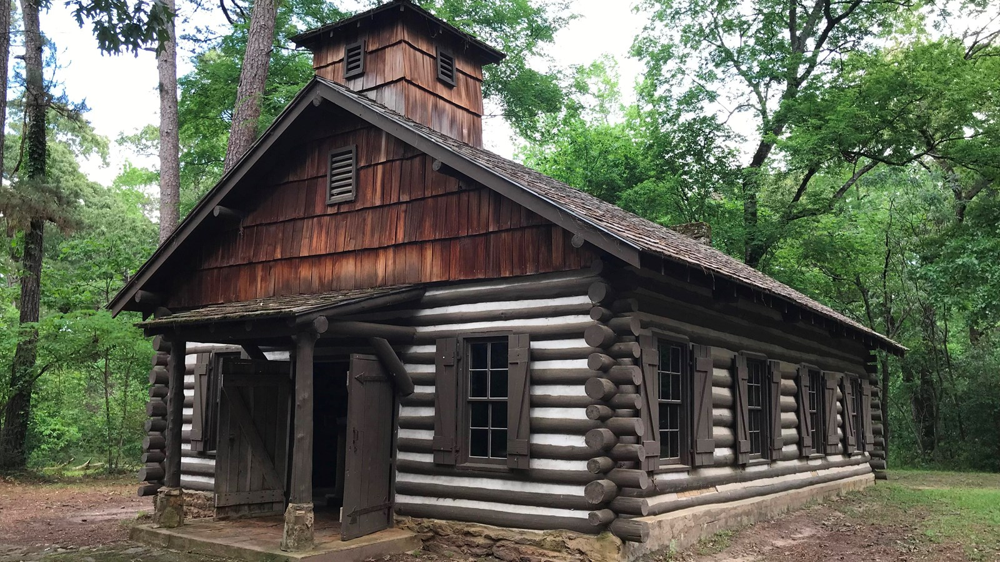
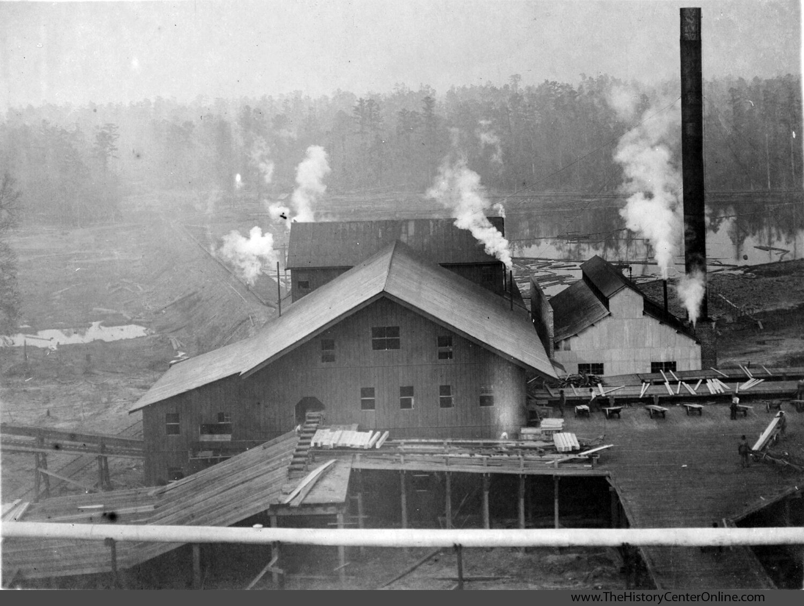
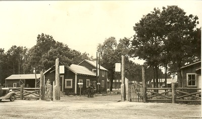

Every ring was laid down by somebody who thought this place was worth keeping.
A thousand years in the Piney Woods, one ring at a time. Swipe through, then dig into the whole story.
Caddo country
Caddo people built a village and ceremonial center on a bluff above the Neches. Three earthen mounds still rise out of the pines near Alto.
Read the ring →
The King’s Road comes through
The first mission in the province of Texas went up in a Caddo village near present-day Weches. A stretch of El Camino Real still runs through the pines.
Read the ring →
Rails, sawdust and new towns
The railroad made Lufkin in 1882. Then the timber boom: sawmills, company stores and log trains running into Diboll.
Read the ring →
Cutover land gets a second chance
Stumps and worn-out farms became the Angelina, Davy Crockett, Sabine and Sam Houston national forests. The pines you drive through grew back.
Read the ring →
East Texans saved the Big Thicket
Not because Washington noticed. Because local people wouldn’t quit until it became one of the country’s first national preserves.
Read the ring →The next ring is ours
The water under our feet is the next fight, and it’s the same kind of fight.
Read the ring →Swipe or scroll sideways for more →
The water thread: the Southland paper mill drank from the same aquifer our wells drink from today, and the state watched it drop hundreds of feet. We’ve watched our water drop before →